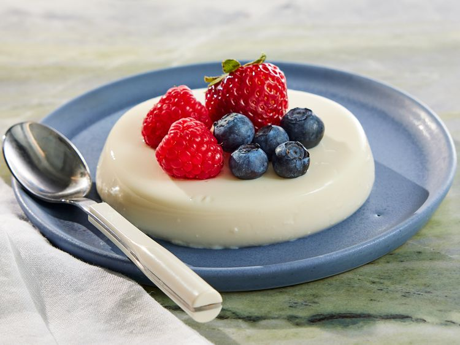

Panna cotta

Description
Ingredients
- 1/3 cup skim milk
- 1 envelope unflavoured gelatin
- 2.5 cups heavy cream
- 1/2 cup white sugar
- 1.5 teaspoons vanilla extract
Steps
- Gather all ingredients
- Pour milk into a small bowl. Sprinkle gelatin powder over milk and stir until combined. Set aside.
- Stir heavy cream and sugar together in a saucepan. Set over medium heat and bring to a boil; watch carefully as the cream can quickly bubble up and boil over.
- Immediately stir gelatin mixture into boiling cream, stirring until completely dissolved. Cook and stir for 1 minute.
- Remove the pan from the heat and stir in vanilla.
- Pour cream mixture into 6 individual ramekins. Leave to cool, uncovered, until no longer warm, about 20 minutes.
- When cool, cover with plastic wrap. Refrigerate until set, at least 4 hours but preferably overnight.
Back to homepage